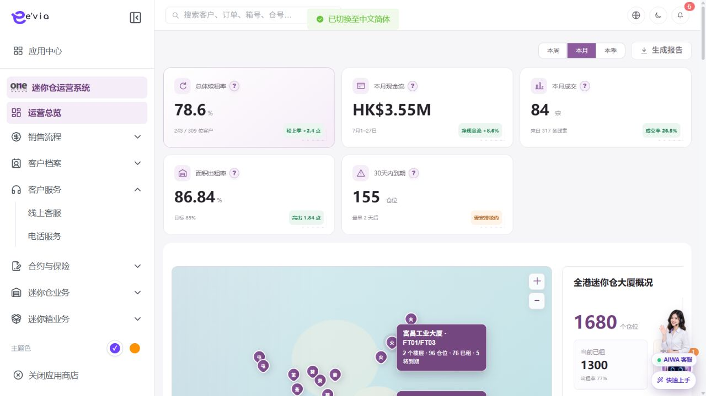

PRODUCT REQUIREMENTS
运营总览 PRD
下载 Word 文档运营总览 PRD
运营后台研发详细需求规格 · V2.1 · 2026-09-09
1 文档目标与范围
为管理层和运营人员提供统一经营视图，并支持从异常指标下钻到线索、订单、续租、仓位和工单。 本文档明确页面字段、操作流程、业务规则、跨端契约、权限和验收条件。
| 属性 | 内容 |
|---|---|
| 文档编号 | OS-OPS-PRD-01 |
| 产品基线 | AiwaBot产品原型 V3.2 与 OneStorage运营后台原型 V1.1 |
| 版本 | V2.1 2026-09-09 |
1.1 原型界面依据
以下截图直接取自 AiwaBot产品原型-v3.2.html，用于核对页面布局、入口、字段和操作位置。

2 页面结构与查询
2.1 统计口径总则
| 规则项 | 开发规格 |
|---|---|
| 时区与区间 | 统一Asia/Hong_Kong；周一00:00起，月/季按自然周期；事件区间为[startAt,endAt)。 |
| 截止时点与比较 | 返回asOfTime；未结束周期仅统计至截止时点，对比使用上一可比周期相同已过时长。 |
| 事件/快照 | 现金流、成交、收入按事件时间；出租率、开放工单、在租客户按截止时点快照。 |
| 范围与去重 | 先应用dataScope，再应用区域/门店/业务类型；按orderId、leadId、unitId、boxId、ticketId去重。 |
| 精度与零分母 | 金额以分存储；率用原始分子分母计算后四舍五入。分母为0返回null并显示—，不得显示0%。 |
| 刷新与降级 | 工单1分钟，销售/资产/续租5分钟，财务15分钟，客户30分钟；源失败显示最后成功时间，禁止以0代替。 |
2.2 核心指标卡计算规则
| 指标ID/指标 | 公式与去重 | 时间口径及排除项 | 刷新、下钻与对账 |
|---|---|---|---|
| K01 本月现金流 | Σ已入账现金流入（租金、按金、服务费）－Σ已完成退款－Σ已确认现金支出；以paymentTransactionId去重，币种统一为HKD。 | postedAt落在所选周期；排除应收未收、待核验付款、仅开票、作废/测试交易。跨币种按入账日财务汇率换算。 | 15分钟；下钻付款凭证，明细分项合计必须与卡片精确到分一致。 |
| K02 本月成交 | COUNT(DISTINCT orderId)，条件为合同签署完成且首笔应收确认；同一订单仅计1次。转化率＝当期有效线索归因成交数÷当期有效线索数。 | 成交时间取firstReceivableConfirmedAt；排除草稿、取消、全额退款、重复转化、测试订单。线索按leadId去重。 | 5分钟；下钻订单中心。卡片同时返回dealCount、leadCount、conversionRate，前端不得自行混用口径。 |
| K03 面积出租率 | 期末已租迷你仓实际面积÷期末可出租迷你仓实际面积×100%；按面积加权，不得平均各仓位出租率。 | 取报告截止时点快照；仅正常营业门店。禁用、维修及nonRentable仓位不进入分母；已生效占用进入分子。 | 5分钟；下钻空间管理，并返回rentedArea、rentableArea和目标值。 |
| K04 容积出租率 | 期末已租可用容积÷期末可出租可用容积×100%；仓位容积＝有效长×宽×高，统一单位后汇总。 | 取截止时点快照；尺寸缺失仓位不进入分子/分母并计入口径异常数；禁用、维修、不可出租排除。 | 5分钟；下钻缺尺寸及在租仓位，返回rentedVolume、rentableVolume、invalidDimensionCount。 |
| K05 迷你箱出租率 | （已配对＋在仓在租＋召回处理中）迷你箱数÷可运营迷你箱总数×100%；按boxId去重。 | 取截止时点最新状态；维修、报废、禁用、测试箱不进分母。召回完成且解除客户关系后不再计入分子。 | 5分钟；下钻迷你箱资产，返回rentedBoxCount、operableBoxCount。 |
| K06 30天内到期 | COUNT(DISTINCT unitId)，active合同的endDate位于(asOfDate, asOfDate＋30天]。 | 以香港自然日计算；已完成续租、已退租、取消、测试订单排除；转仓合并后只统计目标有效仓位。 | 5分钟；下钻续租管理并携带expiryFrom/expiryTo；展示最近到期剩余天数。 |
| K07 总体续租率 | 已完成续租客户数÷符合续租条件的到期客户数×100%；同一客户同一续租事件涉及多个仓位只计1人。 | 分母按原合同到期日在所选周期；分子须续租合同已签且首笔续租款已确认。主动退租、作废合同、测试订单、转仓合并排除。 | 5分钟；下钻续租管理，返回eligibleCustomerCount、renewedCustomerCount、pendingCustomerCount。 |
| K08 当前开放工单 | COUNT(DISTINCT ticketId)，状态属于待接单、待处理、处理中、待复核等非终态。 | 取截止时点快照；取消、已完成、已关闭、测试工单排除；按当前归属门店计数。 | 1分钟；下钻工单中心并携带openStatus集合。 |
| K09 SLA风险 | 开放工单中已超SLA，或预计剩余时长≤预警阈值的COUNT(DISTINCT ticketId)。 | 暂停计时须有获批暂停区间；剩余时长＝SLA截止－当前时间－有效暂停时长。阈值由工单类型/优先级配置。 | 1分钟；下钻SLA风险清单，优先显示已超时，再按剩余时长升序。 |
2.3 图表统计规则
| 图表ID/名称 | 图形 | 统计公式与维度 | 特殊规则、联动与下钻 |
|---|---|---|---|
| C01 销售转化路径 | 数字漏斗/路径 | 线索317、有效联系276、预约看仓66、入住成交84；有效联系率＝有效联系线索÷有效线索；联系后成交率＝有效联系后成交线索÷有效联系线索。 | 预约不是成交必经节点，禁止用相邻柱高强制单调；看仓率分母为具备看仓意向的有效联系线索。点击阶段下钻对应线索/预约/订单。 |
| C02 营销效率 | 预算进度＋成本指标 | 执行率＝已确认营销支出÷已审批预算；余额＝预算－支出；CPL＝支出÷付费渠道有效线索；来电成本＝支出÷归因有效来电；成交成本＝支出÷归因成交订单。 | 按campaignId及首触归因；分母为0显示“—”。原型示例预算120,000、余额18,226，对应执行率84.8%。 |
| C03 获客渠道构成 | 环形图 | 按有效线索firstTouchChannel分组COUNT(DISTINCT leadId)，占比＝渠道线索数÷全部有效线索数。 | 未知渠道单列“其他/未知”；按数量降序；百分比由后端原始分子分母计算，末位差使用最大余数法校正到100%。 |
| C04 门店续租率 | 门店柱状图＋目标线 | 门店续租率＝门店已完成续租客户÷门店符合条件到期客户；目标线默认75%，配置化。 | 客户按customerId＋renewalEventId去重，门店按原到期合同storeId归属；同率时按符合条件客户数降序。点击门店下钻。 |
| C05 续租时机分布 | 近4季度柱线图 | 柱为renewalEffectiveAt落入季度的续租客户数；率为原合同到期日在该季度的已续客户÷符合条件客户。 | 数量与续租率使用不同时间锚点，接口必须分别返回countTimeBasis和rateTimeBasis，页面问号明确说明，禁止用柱值直接除出率。 |
| C06 现金流与收入趋势 | 近7月双折线 | 收入线＝已入账租金＋服务费，不含可退按金和现金支出；现金流净额按K01。对比线取紧邻上一可比周期，并按相同已过天数截断。 | 月粒度按香港时区；当前月未结束显示“截至M月D日”。点击月份下钻付款凭证；退款回冲到实际完成月份，不回写原月。 |
| C07 空间利用率 | 三项仪表/进度条 | 面积、容积、迷你箱分别严格复用K03、K04、K05，不允许前端二次聚合。 | 同时返回分子、分母、异常资产数及快照时间；区域/门店筛选后重新计算，不使用全局率平均。 |
| C08 重点门店效率 | 门店排名条形图 | 门店面积出租率、续租率及未来30天到期数；默认取面积出租率Top4。 | 排序：出租率降序→可出租面积降序→storeCode升序；目标线85%。点击门店进入楼层/仓位视图并继承截止时点。 |
| C09 迷你箱区域状态 | 分组堆叠条形图 | 按box最新StoreLocation分组；在租＝已配对＋在仓在租＋召回处理中，空闲＝当前可用。 | 区域合计须等于全局可运营箱数；位置未知单列“待定位”；原型示例699在租、751空闲、合计1450，出租率48.21%。 |
| C10 到期风险分布 | 分段柱状图 | 将K06仓位按剩余自然日分为1–7天、8–14天、15–30天，区间互斥且并集等于30天到期数。 | 剩余天数＝endDate－asOfDate；当日已到期进入逾期清单，不进入未来30天。点击分段下钻并携带精确日期区间。 |
| C11 工单处置概览 | 状态卡＋类型分布 | 开放工单按待处理/处理中/SLA风险分组；今日完成按completedAt香港自然日；类型分布按ticketType；高优先级按priority配置。 | 状态分组互斥，SLA风险为开放工单的交叉标签，不与状态数相加；点击类型或状态下钻工单中心。 |
| C12 订单业务分布 | 环形图＋最新动态 | 按所选周期有效订单businessType分为迷你仓、迷你箱、续租、退租；COUNT(DISTINCT orderId)，占比＝类型订单数÷总有效订单数。 | 排除草稿、取消、测试及全额退款订单；最新动态按业务节点时间倒序，仅显示用户有权限的数据。原型固定数字不得写死。 |
| C13 客户资产概览 | 指标卡＋客群构成 | 客户总数按有效customerId；活跃在租为截止时点至少一个有效租约；新增按createdAt；资料完整率＝必填主档字段完整客户÷有效客户。 | 客群标签按优先级互斥：活跃迷你仓→活跃迷你箱→潜在客户→历史客户；一个客户只落一个主分群。点击下钻客户档案。 |
| C14 空间经营全景 | 香港地图→门店→楼层→仓位 | 组合展示门店数、仓位总数、已租、预留、维修、禁用、到期及出租率；楼层可出租数＝总数－维修－禁用－不可出租。 | 地图和层级卡使用同一assetSnapshotId；点击区域、门店、楼层逐级过滤。仓位状态互斥，状态合计须等于层级总数。 |
| C15 经营预警 | 规则卡片 | 预算超支、成交成本环比、出租率低于目标、口径异常、30天到期和SLA风险按配置阈值产生预警。 | 每条预警返回ruleId、level、actual、threshold、dimension、detectedAt和detailUrl；数据源失败显示“数据异常”，不得生成业务零值预警。 |
2.4 筛选、联动与查询状态
| 能力 | 规则 |
|---|---|
| 周期 | 默认本月；周/月/季切换重算事件型指标，快照型指标取周期末或当前asOfTime。 |
| 区域/门店 | 受dataScope约束；地图选择与顶部筛选双向同步。 |
| 业务类型 | 不适用该维度的组件须明确标记，不得静默改变指标定义。 |
| 联动与下钻 | 临时筛选显示面包屑；detailUrl携带metricId、周期、asOfTime、筛选和metricVersion。 |
| 状态 | 区分合法零值、零分母、无权限、过期数据、部分成功和失败；组件独立重试。 |
2.5 数据来源与字段映射
| 数据域 | 事实对象 | 关键字段 | 用途与责任 |
|---|---|---|---|
| 财务主域 | PaymentTransaction、Refund、CashExpense、FxRate | transactionId、amountMinor、currency、status、postedAt、storeId | 现金流、收入、营销支出；财务入账状态为唯一事实来源。 |
| 销售主域 | Lead、Contact、Appointment、SalesOrder | leadId、orderId、channel、businessType、signedAt、firstReceivableConfirmedAt | 成交、转化路径、渠道、订单构成；编号去重。 |
| 合同续租域 | Contract、RenewalEvent | customerId、unitId、storeId、endDate、renewalEffectiveAt、status | 到期、续租率、续租时机；保留原合同归属。 |
| 空间资产域 | Store、Floor、StorageUnit、AssetSnapshot | area、volume、rentableFlag、occupancyStatus、snapshotId | 面积/容积出租率、门店效率、空间全景。 |
| 迷你箱域 | BoxAsset、BoxPairing、BoxLocation | boxId、operableStatus、rentalStatus、latestStoreLocation | 迷你箱出租率与区域状态。 |
| 工单域 | Ticket、TicketSlaClock | ticketId、status、type、priority、slaDueAt、pauseIntervals | 开放工单、SLA风险、今日完成。 |
| 客户主域 | Customer、CustomerProfile | customerId、createdAt、profileCompleteness、segmentFacts | 客户资产概览与分群。 |
2.6 接口返回与可追溯要求
•
每个组件返回metricId、metricVersion、asOfTime、periodStart、periodEnd、timezone、numerator、denominator、value、unit、status和detailUrl
•
图表series返回维度编码、名称、原始分子分母、rawRate和displayRate；前端只格式化
•
报告冻结metricVersion、筛选、watermark和assetSnapshotId；历史报告不可静默变化
•
组件状态为SUCCESS、STALE、PARTIAL、FAILED、NO_PERMISSION；PARTIAL返回missingSources
2.7 口径验收与对账示例
| 验收项 | 输入 | 预期结果 |
|---|---|---|
| 成交转化率 | 317条有效线索、84笔归因成交 | 显示26.5%，下钻leadId去重后84。 |
| 面积目标偏差 | 86.84%，目标85.00% | 显示+1.84pp。 |
| 迷你箱出租率 | 在租699、空闲751 | 显示48.21%，区域汇总与全局一致。 |
| 营销预算 | 预算120,000、余额18,226 | 支出101,774，执行率84.8%。 |
| 到期分段 | 40、45、70 | 互斥合计155，与30天到期卡一致。 |
| 零分母 | 符合续租条件客户0 | 返回null并显示—，不参与排名。 |
| 源失败 | 财务失败，其他成功 | 财务组件失败但不显示0；其他组件正常。 |
3 数据返回字段规格
| 字段ID | 字段 | 来源 | 展示与交互规则 |
|---|---|---|---|
| OS-OPS-PRD-01-L01 | 指标名称 | 业务主域 | 详情与导出保持一致；空值显示—，不使用模拟值补齐。 |
| OS-OPS-PRD-01-L02 | 当前值 | 业务主域 | 详情与导出保持一致；空值显示—，不使用模拟值补齐。 |
| OS-OPS-PRD-01-L03 | 统计周期 | 服务端时间 | 按Asia/Hong_Kong显示；空值显示—，排序使用原始时间。 |
| OS-OPS-PRD-01-L04 | 同比或环比 | 业务主域 | 详情与导出保持一致；空值显示—，不使用模拟值补齐。 |
| OS-OPS-PRD-01-L05 | 目标值 | 业务主域 | 详情与导出保持一致；空值显示—，不使用模拟值补齐。 |
| OS-OPS-PRD-01-L06 | 偏差 | 业务主域 | 详情与导出保持一致；空值显示—，不使用模拟值补齐。 |
| OS-OPS-PRD-01-L07 | 数据更新时间 | 服务端时间 | 按Asia/Hong_Kong显示；空值显示—，排序使用原始时间。 |
| OS-OPS-PRD-01-L08 | 统计口径 | 业务主域 | 详情与导出保持一致；空值显示—，不使用模拟值补齐。 |
| OS-OPS-PRD-01-L09 | 下钻入口 | 业务主域 | 详情与导出保持一致；空值显示—，不使用模拟值补齐。 |
4 报告生成参数
| 字段ID | 字段 | 控件 | 必填 | 校验与保存规则 |
|---|---|---|---|---|
| OS-OPS-PRD-01-F01 | 统计周期 | 文本框 | 条件必填 | 去除首尾空格；保存原始值与标准化值。 |
| OS-OPS-PRD-01-F02 | 区域 | 文本框 | 条件必填 | 去除首尾空格；保存原始值与标准化值。 |
| OS-OPS-PRD-01-F03 | 店铺 | 单选或下拉选择 | 必填 | 选项来自服务端字典；提交编码值，界面显示名称。 |
| OS-OPS-PRD-01-F04 | 业务类型 | 单选或下拉选择 | 必填 | 选项来自服务端字典；提交编码值，界面显示名称。 |
| OS-OPS-PRD-01-F05 | 对比周期 | 文本框 | 条件必填 | 去除首尾空格；保存原始值与标准化值。 |
| OS-OPS-PRD-01-F06 | 报告格式 | 文本框 | 条件必填 | 去除首尾空格；保存原始值与标准化值。 |
| OS-OPS-PRD-01-F07 | 接收邮箱 | 邮箱输入 | 选填 | 格式校验并转小写保存检索值。 |
5 操作与处理流程
| 操作ID | 操作 | 前置条件与系统处理 | 结果与失败处理 |
|---|---|---|---|
| OS-OPS-PRD-01-A01 | 切换统计周期 | 选择本周、本月或本季；所有卡片、图表和列表使用同一时间范围并显示截止时间。 | 成功后刷新详情和时间线；失败保留输入并显示错误码。 |
| OS-OPS-PRD-01-A02 | 指标口径说明 | 点击问号展示分子、分母、排除项、时间口径和数据源，口径版本随报告归档。 | 成功后刷新详情和时间线；失败保留输入并显示错误码。 |
| OS-OPS-PRD-01-A03 | 指标下钻 | 点击成交、到期、续租、工单或仓位指标，携带当前筛选跳转到对应模块。 | 成功后刷新详情和时间线；失败保留输入并显示错误码。 |
| OS-OPS-PRD-01-A04 | 生成报告 | 校验数据计算状态后生成带口径版本的报告；失败时保留任务编号并允许重试。 | 成功后刷新详情和时间线；失败保留输入并显示错误码。 |
| OS-OPS-PRD-01-A05 | 地图与门店下钻 | 选择门店标记后展示仓位总数、已租、到期风险及门店详情入口。 | 成功后刷新详情和时间线；失败保留输入并显示错误码。 |
6 状态机与业务规则
| 对象 | 状态流转 |
|---|---|
| 运营总览 | 正常→关注→预警；数据任务：计算中→成功/部分成功/失败 |
| 异步任务 | 待执行→执行中→成功/失败→重试/人工处理 |
| 规则ID | 业务规则 |
|---|---|
| OS-OPS-PRD-01-R01 | 指标必须显示数据截止时间，禁止把缓存时间写成业务发生时间 |
| OS-OPS-PRD-01-R02 | 现金流、收入、订单和出租率分别使用财务、订单和资产主域数据 |
| OS-OPS-PRD-01-R03 | 下钻结果总数必须能与指标口径解释一致 |
| OS-OPS-PRD-01-R04 | 部分数据源失败时明确标记受影响指标，不显示为零 |
| OS-OPS-PRD-01-R05 | 所有写请求携带clientRequestId和expectedVersion，重复请求返回首次结果 |
| OS-OPS-PRD-01-R06 | 服务端返回allowedActions，前端仅据此展示按钮，后端仍逐动作鉴权 |
| OS-OPS-PRD-01-R07 | 列表、详情、关联选择器、统计和导出使用同一数据范围 |
| OS-OPS-PRD-01-R08 | 创建、编辑、状态流转、导出、下载和审批均记录操作审计 |
| OS-OPS-PRD-01-R09 | 第三方调用失败不得伪装主业务成功，进入可重试或人工处理状态 |
7 业务处理链路
•
配置和治理操作使用审批、发布和版本管理
•
下游状态变化通过领域事件处理
•
批量和异步任务提供状态与失败明细
8 跨端交互规则
| 规则ID | 交互规则 |
|---|---|
| OS-OPS-PRD-01-X01 | 小程序成交、付款、退租和续租结果通过领域事件更新经营指标 |
| OS-OPS-PRD-01-X02 | 工单小程序的接单、签到、完成和退回更新SLA统计 |
| OS-OPS-PRD-01-X03 | 任何跨端事件延迟不改变详情主数据，用户下钻时回源查询 |
•
客户小程序仅访问本人数据，工单小程序仅访问本人或团队任务
•
深链打开后重新校验身份、权限和最新状态
•
金额、库存、状态和allowedActions必须回源
•
离线重试沿用同一clientRequestId
9 接口与事件契约
| 契约 | 路径或事件 | 要求 |
|---|---|---|
| 总览 | GET /ops/v1/dashboard/summary | 筛选、asOfTime、metricVersion及组件独立状态 |
| 图表 | GET /ops/v1/dashboard/charts/{metricId} | 原始分子分母、维度序列、watermark和下钻 |
| 下钻 | GET /ops/v1/dashboard/drilldowns/{metricId} | 同口径分页明细及可对账总数 |
| 生成报告 | POST /ops/v1/dashboard/reports | 幂等并冻结筛选、版本、watermark与快照 |
| 报告任务 | GET /ops/v1/dashboard/reports/{reportId} | 状态、失败原因和签名下载地址 |
| 失效事件 | DashboardMetric.Invalidated.v1 | 定向失效指标及维度缓存 |
10 异常与边界处理
| 场景 | 处理 |
|---|---|
| 400字段错误 | 字段级提示并保留输入 |
| 403无权限 | 拒绝并记录审计 |
| 404不存在 | 不泄露额外对象信息 |
| 409版本冲突 | 刷新后重新操作 |
| 重复请求 | 返回首次幂等结果 |
| 第三方失败 | 进入重试或人工处理 |
11 验收标准
| 验收ID | 验收条件 |
|---|---|
| OS-OPS-PRD-01-AC01 | K01至K09均返回分子、分母、时间锚点、排除项、metricVersion和截止时间 |
| OS-OPS-PRD-01-AC02 | C01至C15严格按本文档公式及维度计算，筛选后不得平均汇总率 |
| OS-OPS-PRD-01-AC03 | 84÷317显示26.5%，699÷1450显示48.21%，86.84%相对85%显示+1.84pp |
| OS-OPS-PRD-01-AC04 | 到期分段互斥且合计等于K06，门店/区域/全局可逐层对账 |
| OS-OPS-PRD-01-AC05 | 零分母显示—，合法零值显示0，数据源失败不得显示为0 |
| OS-OPS-PRD-01-AC06 | 下钻携带周期、asOfTime、筛选和metricVersion，明细数量与指标一致 |
| OS-OPS-PRD-01-AC07 | 当前周期比较按相同已过时长，退款与冲正进入实际完成周期 |
| OS-OPS-PRD-01-AC08 | 单一数据源超SLA仅降级受影响组件并显示最后成功时间 |
| OS-OPS-PRD-01-AC09 | 报告冻结筛选、metricVersion、watermark和assetSnapshotId |
| OS-OPS-PRD-01-AC10 | 总览、下钻和报告下载执行dataScope、脱敏和审计 |